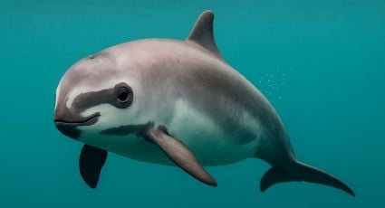

Curiosidades
Velocidade
- 🌊 Características do nado
- ⚡ Quando aumenta a velocidade?
raridade
Galeria



A vaquita vive somente em uma pequena região do Golfo da Califórnia, o que torna sua sobrevivência ainda mais difícil.
ExplorarA vaquita vive apenas no norte do Golfo da Califórnia, no México.
